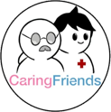

<!DOCTYPE html>
<html lang="pt-br">
<head>
    <meta charset="UTF-8">
    <meta http-equiv="X-UA-Compatible" content="IE=edge">
    <meta name="viewport" content="width=device-width, initial-scale=1.0">
    <title>Sobre Nós</title>
    <link rel="stylesheet" href="css/SobreNos.css">
</head>
</html>
<body>
    <header>
        <div class="center">
            <div class="logo"></div>
            <div class="menu">
                <a href="#">Home</a>
                <a href="#">Sobre Nós</a>
                <a href="#">LifeCare</a>
                <input type="button" value="Paciente">
                <input type="button" value="Cuidador">
            </div>
        </div>
    </header>
    <main>
        <h1>Conheça um pouco sobre a gente!</h1>
        <p>O CaringFriends surgiu como o projeto de Trabalho de Conclusão de Curso do DataLake <br> para curso de Informática de 2021 do Colégio Politécnico Bento Quirino.<br>
        A ideia veio depois que uma parente de um dos participantes do grupo teve complicações<br> e precisava de um cuidador, com isso, percebemos o quanto uma tarefa que era<br>
        para ser tão simples como achar alguém para cuidar de você, era, na verdade, complicada <br> e gerava grande dor de cabeça. <br>
        Além do desejo de criarmos um bom projeto final, vimos também como essa ideia <br>
        poderia ser muito útil para quaisquer um que precisasse de uma mãozinha.</p>
    </main>
    <section class="extras">
        
    </section>
    <footer>
        <div class="footer-center">
            <h2>Formas de contato</h2>
            <li><a href=""></a></li>
        </div>
    </footer>
</body>
</html>